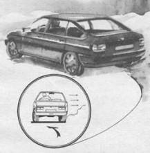

“Зацеп”
Возникающая на повороте центробежная сила в определенных ситуациях (низкий коэффициент сцепления, высокая скорость автомобиля при малом радиусе поворота и др.) приводит к потере устойчивости автомобиля и боковому скольжению колес.
Многие, даже опытные водители, очень “неуютно” чувствуют себя на обледенелых спусках и поворотах, когда поверхность дороги становится похожей на зеркальный каток. Любое резкое движение рулевым колесом или педалью подачи топлива способно вызвать снос колес. Критическая ситуация прогрессирует, нарастает как снежный ком, так как из-за слабой реакции дороги автомобиль плохо реагирует на управляющие действия.
Опасную дорогу можно превратить в безопасную, используя специальные приемы для повышения устойчивости и управляемости. Одним из них является “зацеп” внутренней поверхностью колес за выступающую поверхность дороги или за участок с высоким коэффициентом сцепления.
Вариантом такого приема является опускание внутренних колес в обочину или за внутренний край дороги. В спорте такой прием называют трамвайной ездой, так как профилирующий борт напоминает рельс и позволяет увеличить скорость, не опасаясь за безопасность. Можно вполне успешно использовать для “зацепа” продольные бугры, ямы, участки уплотненного снега или любые другие, даже на первый взгляд незначительные возвышения. Возможностью для “зацепа” может послужить любой участок с повышенным относительно дороги коэффициентом сцепления, например проплешины асфальта, покрытый грязью лед, щербины в укатанном снегу, даже легкий неукатанный снег.
Сложность выполнения приема связана с тем, что внутреннее колесо в повороте имеет тенденцию к разгрузке (более загружено наружное колесо), а следовательно, к выходу из зацепления.
Момент потери контакта колеса обычно связан с интенсивным сносом или заносом. Поэтому, используя “зацеп” как способ самостраховки, нужно помнить о его ограниченных возможностях.
Автогонщики считают, что “зацеп” эффективен до определенных пределов, а затем автомобиль буквально “сдувает” с дороги.
На зимней дороге можно использовать “зацеп” не на всей траектории движения, а на ее элементах, не забывая о том, что после потери “зацепа” и выхода на чистый лед нужно заранее уменьшить обороты двигателя, а в отдельных случаях и подготовиться к стабилизации автомобиля в заносе.
“Зацеп” эффективно используется в колее, часто сочетаясь с “упором” наружной поверхностью колеса. Эти два приема – “зацеп” и “упор” – хорошо дополняют друг друга.

Скользящему и рыскающему на скользкой дороге автомобилю можно придать дополнительную устойчивость, используя опыт трамвайной езды. Внутренней частью колеса можно “зацепиться” за продольные неровности, снежный бортик или участок дороги с высоким коэффициентом сцепления.